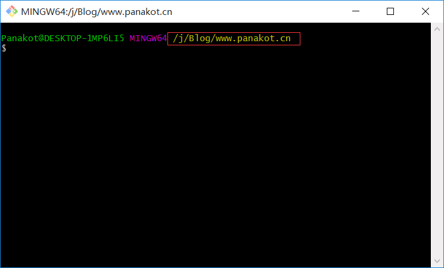
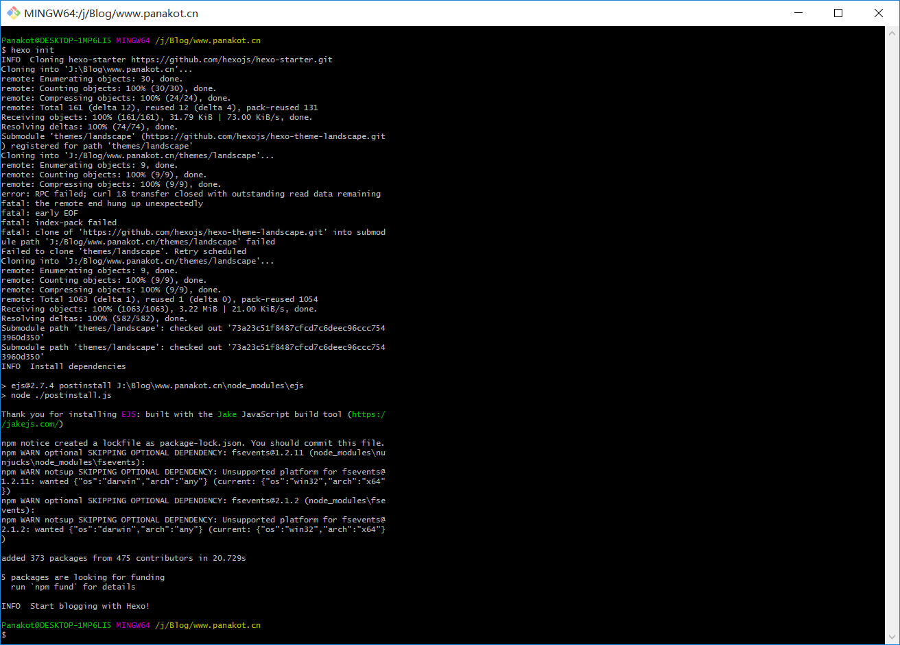
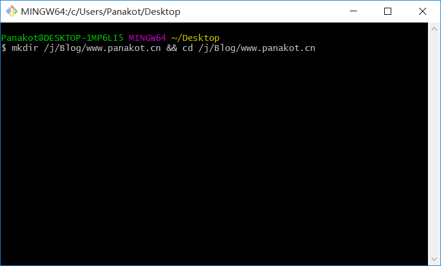
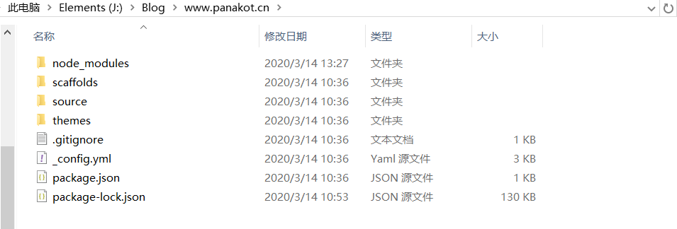

配置Hexo
## 建立网站 安装好 Hexo 后即可建立你的网站。这里整理两种方式： ① 在某盘符新建一个文件夹，命名定义自己喜欢的、方便的。然后鼠标双击进入文件夹，通过鼠标右键，点击" Git Base Here "，打开当前路径。使用如下命令：hexo init //hexo会在当前路径的文件夹中创建所需的文件 图1：

图2：

②随便在Windwons的任何文件夹点击鼠标右键，通过” Git Base Here “中来创建hexo所需的文件。使用命令如下：
mkdir /j/Blog/www.panakot.cn && cd /j/Blog/www.panakot.cn //在J盘的Blog文件下创建www.panakot.cn文件夹并进入到该文件夹
hexo init //hexo会在当前路径的文件夹中创建所需的文件 图3：

新建完成后，指定文件夹的目录如下：
.
├── themes
├── package.json
├── scaffolds
├── source
| ├── _drafts
| └── _posts
└──_config.yml 图4：

重点解析该类文件夹及文件的功能和作用：
themes
主题文件夹。Hexo 会根据主题来生成静态页面。默认会生成一个landscape的主题文件夹，你也可以去Hexo官网下载自己如意的Hexo主题，然后将下载好的主题放在该目录下，稍后再介绍如何修改主题。
scaffolds
模版文件夹。新建文章时，Hexo会根据scaffold来建立文件。
Hexo的模板是指在新建的文章文件中默认填充的内容。例如，如果您修改scaffold/post.md中的Front-matter内容，那么每次新建一篇文章时都会包含这个修改。
source
这个目录相当重要，当您通过hexo new xxx新建的文章时，所有新建的markdown文件都是在保存在这个目录下的_posts文件下。当前_posts文件夹下默认有一篇hello-world.md的markdown文件。您的文章就是在整个文件中编写的，当您通过hexo g 生成静态文件时，_posts文件下的.md文件，会被编译成html文件，然后放到public（目前该public文件夹不存在，因为我们还没有编译过）文件夹下。
_drafts用来存放草稿文件。
package.json
Hexo框架所依赖的应用程序的信息及参数。EJS, Stylus 和 Markdown renderer 已默认安装，您可以自由移除。
package.json
{
"name": "hexo-site",
"version": "0.0.0",
"private": true,
"hexo": {
"version": ""
},
"dependencies": {
"hexo": "^3.8.0",
"hexo-generator-archive": "^0.1.5",
"hexo-generator-category": "^0.1.3",
"hexo-generator-index": "^0.2.1",
"hexo-generator-tag": "^0.2.0",
"hexo-renderer-ejs": "^0.3.1",
"hexo-renderer-stylus": "^0.3.3",
"hexo-renderer-marked": "^0.3.2",
"hexo-server": "^0.3.3"
}
} _config.yml
全局配置文件，网站的很多信息都在这里配置，诸如网站名称，副标题，描述，作者，语言，主题，部署等等参数。这个文件下面会做较为详细的介绍。
# Hexo Configuration
## Docs: https://hexo.io/docs/configuration.html
## Source: https://github.com/hexojs/hexo/
# Site //站点配置
title: Hexo //网站标题
subtitle: '' //网站副标题
description: '' //网站描述
keywords: //网站的关键词。使用半角逗号 , 分隔多个关键词。
author: John Doe //站长（作者）
language: en //网站使用的语言
timezone: '' //网站时区。Hexo 默认使用您电脑的时区。请参考 时区列表 进行设置，如 America/New_York, Japan, 和 UTC 。一般的，对于中国大陆地区可以使用 Asia/Shanghai。
# URL //站点连接配置
## If your site is put in a subdirectory, set url as 'http://yoursite.com/child' and root as '/child/'
url: http://yoursite.com //您站点的URL（域名）
root: / //网站根目录
permalink: :year/:month/:day/:title/ //文章的永久链接格式，默认格式:year/:month/:day/:title/
permalink_defaults: //永久链接中各部分的默认值
pretty_urls: //改写 permalink 的值来美化 URL
trailing_index: true //是否在永久链接中保留尾部的 index.html，设置为 false 时去除;默认true
trailing_html: true //是否在永久链接中保留尾部的 .html, 设置为 false 时去除 (对尾部的 index.html无效)
# Directory //目录设置
source_dir: source //资源文件夹，这个文件夹用来存放内容。默认值：source。
public_dir: public //公共文件夹，这个文件夹用于存放生成的站点文件。默认值：public
tag_dir: tags //标签文件夹，默认值：tags
archive_dir: archives //归档文件夹，默认值：archives
category_dir: categories //分类文件夹，默认值：categories
code_dir: downloads/code //Include code 文件夹，source_dir下的子目录，默认值：downloads/code
i18n_dir: :lang //国际化（i18n），默认值：文件夹:lang
skip_render: //跳过指定文件的渲染。匹配到的文件将会被不做改动地复制到 public 目录中。您可使用 glob 表达式来匹配路径。
# Writing //文章编写设置
new_post_name: :title.md //新文章的文件名称,默认值：
default_layout: post //预设布局，默认值：
titlecase: false //把标题转换为 title case
external_link: //在新标签中打开链接
enable: true //在新标签中打开链接
field: site //对整个网站（site）生效或仅对文章（post）生效
exclude: '' //需要排除的域名。主域名和子域名如 www 需分别配置
filename_case: 0 //把文件名称转换为 (1) 小写或 (2) 大写
render_drafts: false //显示草稿
post_asset_folder: false //启动 Asset 文件夹
relative_link: false //把链接改为与根目录的相对位址
future: true //显示未来的文章
highlight: //代码块的设置
enable: true //开启代码块高亮
line_number: true //显示行数
auto_detect: false //如果未指定语言，则启用自动检测
tab_replace: '' //用 n 个空格替换 tabs；如果值为空，则不会替换 tabs
wrap: true //Wrap the code block in <table>
hljs: false //Use the hljs-* prefix for CSS classes
# Home page setting //首页设置，可以自己决定每页显示的文章数量和显示文章的顺序
# path: Root path for your blogs index page. (default = '')
# per_page: Posts displayed per page. (0 = disable pagination)
# order_by: Posts order. (Order by date descending by default)
index_generator: //主页设置
path: '' //首页根目录
per_page: 10 //每页显示文章的数量，默认为10.
order_by: -date //显示文章的顺序，默认为-date,按时间逆序
# Category & Tag //标签与分类
default_category: uncategorized //默认分类，默认值uncategorized
category_map: //分类别名
tag_map: //标签别名
# Metadata elements
## https://developer.mozilla.org/en-US/docs/Web/HTML/Element/meta
meta_generator: true
# Date / Time format //时间和日期显示格式，一般没有特殊要求不需要修改
## Hexo uses Moment.js to parse and display date
## You can customize the date format as defined in
## http://momentjs.com/docs/#/displaying/format/
date_format: YYYY-MM-DD //日期格式，默认为YYYY-MM-DD
time_format: HH:mm:ss //时间格式，默认为HH:mm:ss
## Use post's date for updated date unless set in front-matter
use_date_for_updated: false //启用以后，如果 Front Matter 中没有指定 updated， post.updated 将会使用 date 的值而不是文件的创建时间。在 Git 工作流中这个选项会很有用
# Pagination //分页设置
## Set per_page to 0 to disable pagination
per_page: 10 //每页显示的文章量 (0 = 关闭分页功能)
pagination_dir: page //分页目录，默认为page
# Include / Exclude file(s) //在配置文件中，设置include / exclude以使hexo显示处理或忽略某些文件/文件夹。
## include:/exclude: options only apply to the 'source/' folder
include: //Hexo 默认会忽略隐藏文件和文件夹（包括名称以下划线和 . 开头的文件和文件夹，Hexo 的 _posts 和 _data 等目录除外）。通过设置此字段将使 Hexo 处理他们并将它们复制到 source 目录下。
exclude: //设置 Hexo 忽略的文件列表
ignore: //Ignore files/folders
# Extensions //扩展，这里可以设置主题类型和插件
## Plugins: https://hexo.io/plugins/
## Themes: https://hexo.io/themes/
theme: landscape //当前主题名称。值为false时禁用主题
# Deployment //关于网站部署的配置，常用的有部署类型和部署地址
## Docs: https://hexo.io/docs/deployment.html
deploy: //部署的设置
type: '' //网站部署的类型